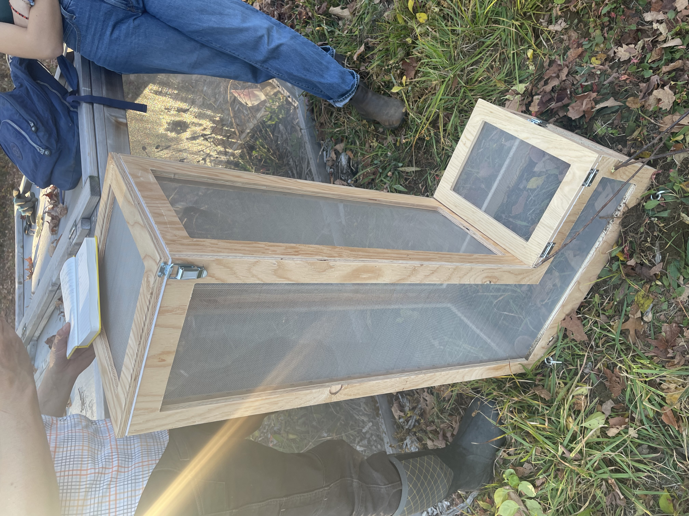
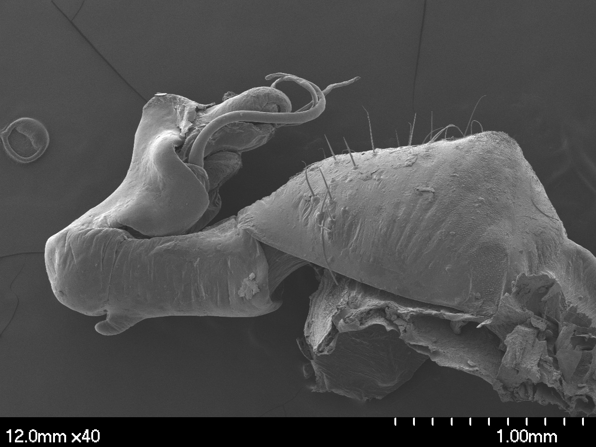
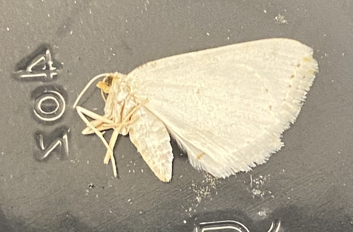
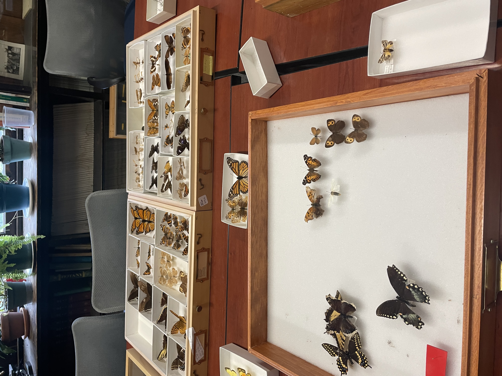
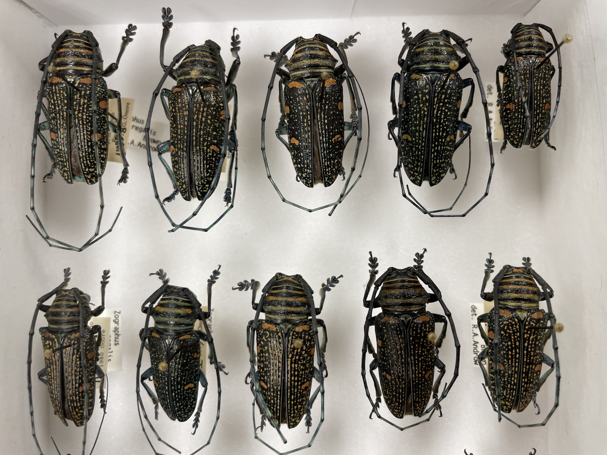

| Name |
Date |
Location |
Description |
Images |
| Assessing Caterpillar Survivability over a Humidity Gradient
| 01/24 to Present |
Smith College |
Studying the impact of humidity and host plant on Baltimore Checkerspot caterpillar survivability. |
 |
| Dragonfly Systematics
| 06/24 to 08/24 |
American Museum of Natural History |
Researching the systematics of the dragonfly genus Libellula using subgenomic anchored hybrid enrichment data and ancestral state reconstruction of male secondary genitalia. |
 |
| Moth Identification Using eDNA
| 10/24 to 11/24 |
Smith College |
Identified moths collected at the MacLeish Field Station using Sanger sequencing to confirm identifications made by an automated moth monitor. |
 |
| Insect Community Composition after Restoration
| 09/23 to 12/23 |
Smith College |
Assessed the insect community composition in restored and mature areas of the MacLeish Field Station over multiple seasons to determine if the restoration efforts were increasing insect biodiversity to ultimately be comparable to mature areas. |
 |
| Insect Curation
| 09/23 to 12/23 |
UMass Amherst |
Identified and sorted unlabeled specimens from the Coleoptera and Lepidoptera collections. |
 |
| Insect Curation
| 04/23 to 08/23 |
Ohio State University |
Sorted Cerambycidae collection and rebottled alcohol preserved cockroach collection. |
 |